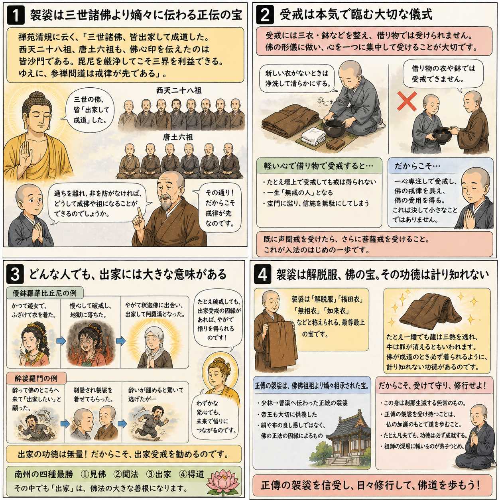

十二巻 巻一覧
正法眼藏第3 袈裟功徳
本紹介ページの導入・語彙・深掘り・クイズは tools/regen_volume_intro_from_corpus.py が OpenAI API で生成したものです（入力は当巻の原文からの短い抜粋のみ）。内容はモデル出力のため、重要箇所は必ず原文・教本と照合してください。
出典: https://shomonji.or.jp/zazen/doc/genzou.html
原文・現代語訳の全文は 全文ページを参照してください。
この巻の紹介（導入）
佛佛祖祖正傳の衣法、まさしく震旦國に正傳することは、嵩嶽の高祖のみなり。高祖は、釋迦牟尼佛より第二十八代の祖なり。
袈裟はふるくより解脱服と稱ず、業障、煩惱障、報障等、みな解脱すべきなり。
語彙の足場
- 袈裟：仏教において僧侶が着用する衣服で、解脱の象徴とされる。
- 正傳：仏教の教えや法が正しく伝えられること。
- 嫡嫡相承：正統な系譜に基づいて教えや法が受け継がれること。
- 功徳：善行によって得られる利益や徳。
- 解脱服：煩悩や業障から解放されるための衣服。
原文（要点の抜粋）
当巻の冒頭付近からの短い抜粋です。長い引用は載せていません。 全文は全文ページを参照してください。出典はリポジトリ内 doc/正法眼蔵.txt です。原文の参照元: https://shomonji.or.jp/zazen/doc/genzou.html
佛佛祖祖正傳の衣法、まさしく震旦國に正傳することは、嵩嶽の高祖のみなり。高祖は、
釋迦牟尼佛より第二十八代の祖なり。西天二十八傳、嫡嫡あひつたはれり。二十八祖、したしく震旦にいりて初祖たり。震旦國人五傳して、曹溪にいたりて三十三代の祖なり、これを六祖と稱ず。第三十三代の祖大鑑禪師、この衣法を黄梅山にして夜半に正傳し、一生護持、いまなほ曹溪山寶林寺に安置せり。
諸代の帝王、あひつぎて内裡に奉請し、供養禮拜す、神物護持せるものなり。唐朝中宗、肅宗、代宗、しきりに歸内供養しき。奉請のとき、奉送のとき、ことさら勅使をつかはし、詔をたまふ。代宗皇帝、あるとき佛衣を曹溪山におくりたてまつる詔にいはく、
今遣鎭國大將軍劉崇景頂戴而送。朕爲之國寶。卿可於本寺安置、令僧衆親承宗旨者、嚴加守護、勿令遺墜（今、鎭國大將軍劉崇景をして、頂戴して送らしむ。朕、之を國寶とす。卿、本寺に安置し、僧衆の親しく宗旨を承けし者をして嚴しく守護を加へ、遺墜せしむることなからしむべし）。
まことに無量恆河沙の三千大千世界を統領せんよりも、佛衣現在の小國に王としてこれを見聞供養したてまつらんは、生死のなかの善生、最勝の生なるべし。佛化のおよぶところ、三千界いづれのところか袈裟なからん。しかありといへども、嫡嫡面授して佛袈裟を正傳せるは、ただひとり嵩嶽の曩祖のみなり、旁出は佛袈裟をさづけられず。二十七祖の旁出、跋陀婆羅菩薩の傳、まさに肇法師におよぶといへども、佛袈裟の正傳なし。震旦の四祖大師、また牛頭山の法融禪師をわたすといへども、佛袈裟を正傳せず。
しかあればすなはち、正嫡の相承なしといへども、如來の正法その功徳むなしからず、千古萬古みな利益廣大なり。正嫡相承せらんは、相承なきとひとしかるべからず。
しかあればすなはち、人天もし袈裟を受持せんは、佛祖相傳の正傳を傳受すべし。印度震旦、正法像法のときは、在家なほ袈裟を受持す。いま遠方邊土の澆季には、剃除鬚髪して佛弟子と稱ずる、袈裟を受持せず、いまだ受持すべきと信ぜず、しらず、あきらめず、かなしむべし。いはんや體色量をしらんや、いはんや著用の法をしらんや。
袈裟はふるくより解脱服と稱ず、業障、煩惱障、報障等、みな解脱すべきなり。龍もし一縷をうれば三熱をまぬかる、牛もし一角にふるればその罪おのづから消滅す。諸佛成道のとき、かならず袈裟を著す。しるべし、最尊最上の功徳なりといふこと。
まことにわれら邊地にうまれて末法にあふ、うらむべしといへども、佛佛嫡嫡相承の衣法にあふたてまつる、いくそばくのよろこびとかせん。いづれの家門か、わが正傳のごとく釋尊の衣法ともに正傳せる。これにあふたてまつりて、たれか恭敬供養せざらん。たとひ一日に無量恆河沙の身命をすてても、供養したてまつるべし、なほ生生世世の値遇頂戴、供養恭敬を發願すべし。われら佛生國をへだつること十萬餘里の山海はるかにして通じがたしといへども、宿善のあひもよほすところ、山海に擁塞せられず、邊鄙の愚蒙きらはるることなし。この正法にあふたてまつり、あくまで日夜に修習す、この袈裟を受持したてまつり、常恆に頂戴護持す。ただ一佛二佛のみもとにして、功徳を修せるのみならんや、すでに恆河沙等の諸佛のみもとにして、もろもろの功徳を修習せるなるべし。たとひ自己なりといふとも、たふとぶべし、隨喜すべし。祖師傳法の深恩、ねんごろに報謝すべし。畜類なほ恩を報ず、人類いかでか恩をしらざらん。もし恩をしらずは、畜類よりも愚なるべし。
この佛衣佛法の功徳、その傳佛正法の祖師にあらざれば、餘輩いまだあきらめず、しらず。諸佛のあとを欣求すべくは、まさにこれを欣樂すべし。たとひ百千萬代ののちも、この正傳を正傳とすべし。これ佛法なるべし、證驗まさにあらたならん。水を乳に入るるに相似すべからず。皇太子の帝位に卽位するがごとし。かの合水の乳なりとも、乳をもちゐん時は、この乳のほかにさらに乳なからんには、これをもちゐるべし。たとひ水と合せずとも、あぶらをもちゐるべからず、うるしをもちゐるべからず、さけをもちゐるべからず。この正傳もまたかくのごとくならん。たとひ凡師の庸流なりとも、正傳あらんは用乳のよろしきときなるべし。いはんや佛佛祖祖の正傳は、皇太子の卽位のごとくなるなり。俗なほいはく、先王の法服にあらざれば服せず。佛子いづくんぞ佛衣にあらざらんを著せん。後漢孝明皇帝、永平十年よりのち、西天東地に往還する出家在家、くびすをつぎてたえずといへども、西天にして佛佛祖祖正傳の祖師にあふといはず。如來より面授相承の系譜なし。ただ經論師にしたがうて、梵本の經教を傳來せるなり。佛法正嫡の祖師にあふといはず、佛袈裟相傳の祖師ありとかたらず。あきらかにしりぬ、佛法の閫奥にいらざりけりといふことを。かくのごときのひと、佛祖正傳のむね、あきらめざるなり。
釋迦牟尼如來、正法眼藏無上菩提を、摩訶迦葉に附授しましますに、迦葉佛正傳の袈裟、ともに傳授しまします。嫡嫡相承して曹溪山大鑑禪師にいたる、三十三代なり。その體色量、親傳せり。それよりのち、靑原南嶽の法孫、したしく傳法しきたり、祖宗の法を搭し、祖宗の法を製す。浣洗の法および受持の法、この嫡嫡面授の堂奥に參學せざれば、しらざるところなり。
袈裟言有三衣、五條衣七條衣、九條衣等大衣也。上行之流、唯受此三衣、不畜餘衣、唯用三衣、供身事足（袈裟は言く三衣有り、五條衣七條衣、九條衣等の大衣也。上行の流は、唯此の三衣を受けて餘衣を畜へず、唯三衣を用て身に供じて事足す）。
図解（4コマ・AI生成）
教義の根拠は原文・出典に従い、漫画は比喩の補助に留めてください。

深掘り（読解の手掛かり）
- 袈裟は仏教の教えを象徴し、僧侶の身分を示す重要な衣服である。
- 正傳の袈裟は、釈迦牟尼からの正統な伝承に基づくものである。
- 袈裟を受持することは、仏教徒としての重要な実践であり、功徳を積む手段となる。
- 歴代の帝王も袈裟を供養し、その重要性を認識していた。
確認（形成評価）
各設問の下の「採点」で正誤を表示します（ブラウザ内のみ。ログは送りません）。